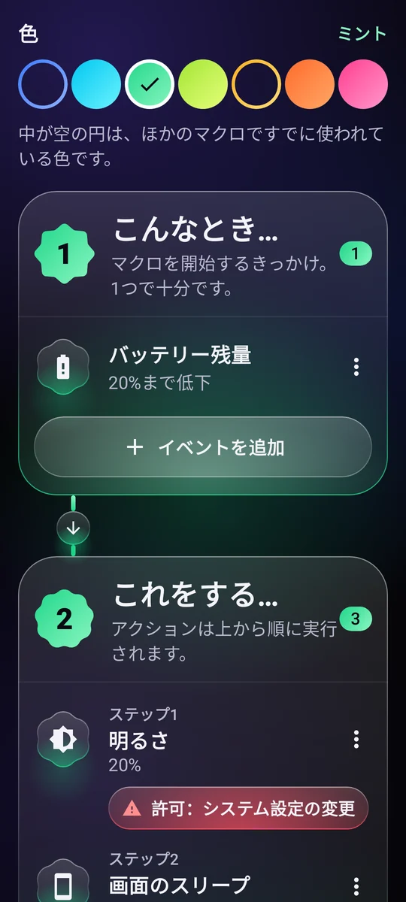
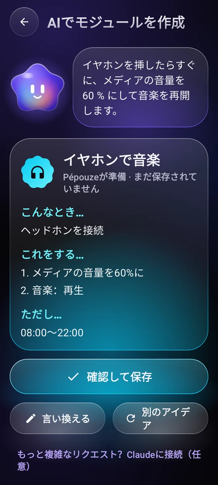
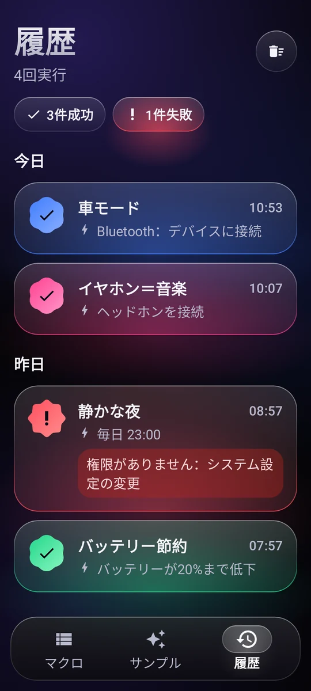

マクロを始めるきっかけ
時刻と曜日、Wi-Fi、Bluetooth、イヤホン、充電器、バッテリー残量、画面の点灯、アプリの起動…
11 種類のトリガーAndroid のための自動化
「いつ…」「実行…」のシンプルなルールを書くだけ。あとはスマホが、ちょうどいいタイミングで自動でやってくれます。
使い方
マクロは一文で書けます。3 つのブロックを組み合わせるだけで、プログラミングは不要です。
時刻と曜日、Wi-Fi、Bluetooth、イヤホン、充電器、バッテリー残量、画面の点灯、アプリの起動…
11 種類のトリガー音量、着信音、おやすみモード、明るさ、ライト、音楽、アラーム、タイマー、通知、テキストの読み上げ、アプリやリンクを開く、画面上のテキストをタップ…
組み合わせ自由な 29 のアクション時間帯、曜日、バッテリー残量、充電中かどうか。

使用例
例をコピーして、自分好みに調整すれば完成。その一部をご紹介します。
車の Bluetooth につながったら、音量が上がって音楽が再開します。
23 時になったら、おやすみモードがオンになり、明るさは最小に、音楽は止まります。
バッテリーが 20% を切ったら、画面が暗くなり、早めにスリープします。
イヤホンを挿したら、控えめな音量で再生が始まります。
朝、充電器を外したら、スマホが時刻とバッテリー残量を読み上げます。
日曜から木曜の 22:30 に、スマホを置くようやさしくお知らせし、画面も暗くなります。

あなたのアシスタント、Pépouze
やりたいことを一文で伝えてください。Pépouze がマクロを用意し、あなたが確認してから保存します。
あなた「イヤホンを挿したら、音楽を 60% で流して」
共有して、すぐ実行
コミュニティとアイデアを交換し、アプリを開かなくてもマクロを実行できます。
ユーザーが共有したマクロのライブラリ。気に入ったものをコピーし、自分のマクロも公開できます。 コミュニティを見る
友だちに見せたり、動画に載せたり。どのカメラでも開けて、Pépouze が取り込みます。
ホーム画面のウィジェット、クイック設定のタイル、ショートカットから、マクロをすぐに実行できます。
Pépouze は 13 の言語に対応し、あなたのリクエストを端末上で直接理解します。
主導権はあなたに
実行のたびに、成功したかどうかと、何がきっかけだったかが記録されます。
権限は、マクロが必要とするときにだけ、説明付きでリクエストされます。
Google ドライブやスマホ内に、アカウントなしで。アカウントがあればオンラインにも。
マクロはあなたのスマホの中にあります。アクセス解析なし、データの販売も一切なし。

料金
広告なし、サブスクなし、裏もなし。Pépouze は個人の独立したプロジェクトです。
€0
よくある質問
マクロに追加した操作のためだけです。画面上のテキストをタップする、戻る／ホームボタンを押す、画面をロックする、スクリーンショットを撮る、どのアプリが開いたかを知る、といった操作です。
画面のテキストは、タップする対象を探すためだけに読み取られ、スマホの外には何も送られません。Pépouze は、あなたが書いたルールどおりにしか動きません。このサービスは専用の説明のあと、あなたの同意があって初めて有効になり、いつでもオフにできます。
いいえ。アカウントは、マクロをオンラインにバックアップするためだけのものです。アカウントなしでも、Google ドライブやスマホ内のファイルにバックアップできます。
はい、ほとんどのマクロは動きます。Pépouze はバックグラウンドでイベントを待ち受けています。Android にスリープさせられないよう、Android の設定のアプリ情報ページで「バッテリー：制限なし」を選んでください。画面を操作するアクションには、ロック解除されたスマホが必要です。
いいえ。「SMS を準備」アクションは、番号と本文を入力した状態でメッセージアプリを開きます。送信ボタンをタップするのはあなたです。
アプリでは、マイアカウント → アカウントを削除。アプリを使わない場合は、アカウント削除のページをご覧ください。
Android で無料。広告もありません。
Pépouze はもうすぐ登場します。誰よりも早く試してみませんか。メールをいただければ招待をお送りします。